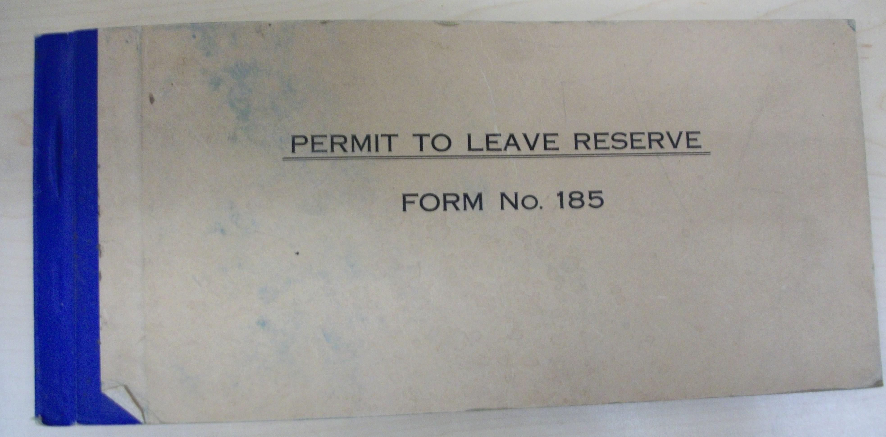

Why My Dad Went To Jail
By Alvina Dreaver
|  |
|
Permit Book from Duck Lake Agency (Canada – Indian and Northern Affairs Canada) |
I remember a way back in years, about fifty years ago. I was about five years old at that time. There was flu going around. A lot of children died.
Three of my sisters died within two days. Nancy and Gladys died at home on the Muskoday Reserve. Beatrice died at the Onion Lake residential school. The news of her death did not reach my parents for about two weeks. Beatrice was buried at Onion Lake. My dad wanted to build coffins for the burial of my two other sisters but he needed some lumber. To get the lumber he needed, he wanted to sell one of his steers. To sell the steer he had to get a permit from Mr. Simpson, the farm instructor. But the farm instructor refused to give him a permit.
My dad went ahead and sold one of the steers anyway to a farmer in the Birch Hills district. He then bought the lumber and white material he needed to make the coffins. He made the coffins and buried my sisters.
About a month later, the RCMP came to our home. Mr. Simpson was with them. He showed the police where we lived. They
 |
| Pass # 15 Duck Lake Agency: request to visit children at Industrial School May 25, 1889. Saskatchewan Archives Board |
took my dad away because he had sold a steer without a permit. My dad spent three months in jail.
(As told to Shirley Bear, Alvina Dreaver is the daughter of Gilbert James Bear, and his wife Kathleen Maude, both deceased)